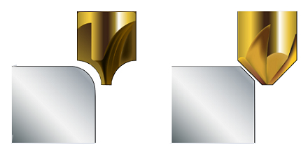
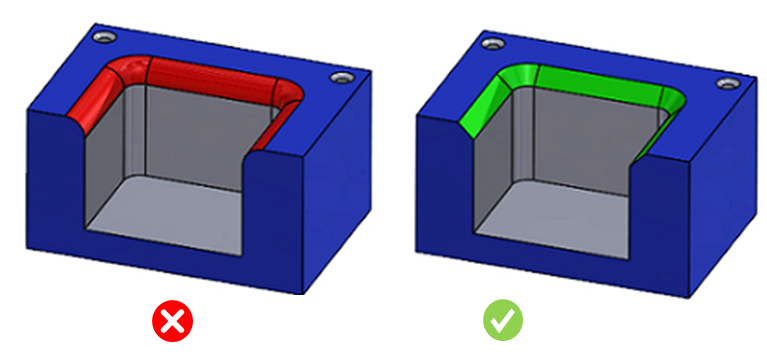
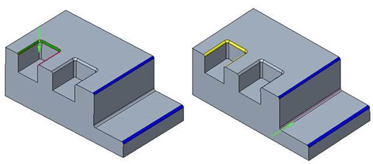

ポケット、ボス、およびスロットの上面にあるエッジは、フィレットではなく面取り（チャンファー）にする必要があります。
製品設計では、（鋭い角が望ましくない場合）フィーチャーの外側エッジに対して、丸め処理の代わりに面取り（ベベル）や面取り（チャンファー）を適用できるようにすることが理想的です。
丸め処理には成形逃げ（フォームリリーフ）付きカッターと高精度な段取りが必要ですが、ベベルやチャンファーは正面フライス（フェイスミル）を使用します。前者は後者に比べてかなり高コストです。

外側フィレットには特殊なカッターと精密な段取りが必要で、いずれも高コストです。そのため、外側コーナーでは、経済的な加工の観点からフィレットよりも面取り（チャンファー）が望ましいです。
既定では、すべてのフィレットが対象として考慮されます。オプションとして、既定の 25.4 mm（1 インチ）または構成で指定した値より高いフィレットは無視できます。
考慮されるパラメータ:
スロットフィーチャーに関連付けられているフィレットは、親のスロットフィーチャーとは独立して検証されます。
すべてのフィレット（すなわち、フィーチャーに関連付けられたフィレットおよび単独フィレット）は、利用可能なすべての加工方向について検証されます。

注記:
ドリル工具はデータベースで構成されます。standard hole sizes ルールを編集して、ルールマネージャーでドリル径を確認してください。
最大ドリル工具径は、standard hole sizes ルール構成で選択した Unit Selection オプションに基づいて解析時に考慮されます。
軸が加工方向と平行な単独のスタンドアロンフィレットは、上面フィレットとしては考慮されません。
次の例に示すように、青色のフィレットは側面方向から加工できます。したがって、これらのフィレットは検証のための上面フィレットとしては考慮されません。
